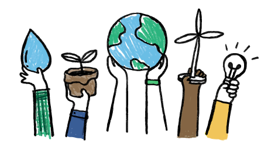
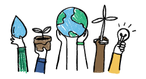

Over the past year, Salesforce once again delivered phenomenal results, guided, as always, by our core values of trust, customer success, innovation, equality, and sustainability. Companies around the world of every size and industry are making major investments in digital transformation, and they are trusting Salesforce to help them connect with their customers in a whole new wayWe sell to businesses of all sizes and in almost every industry worldwide. The number of paying subscriptions at each of our customers ranges from one to hundreds of thousands. In FY22, our core values guided us to the most
successful year in company history. We’re now 73,000+ employees strong and making a daily difference for our customers, partners, communities, and planet. Thank you all. Together, we’re building a better future.
Fy22 Highlights
Revenue
For fiscal 2022, revenue was $26.5 billion, an increase of 25 percent year-over-year.
For fiscal 2022, diluted earnings per share was $1.48 as compared to earnings per share of $4.38 from a year ago. Fiscal 2021 results benefited from a $2.0 billion one-time discrete tax benefit resulting from the recognition of deferred tax assets related to an intra-entity transfer of intangible property.
Earnings per Share
Cash
Cash provided by operations for fiscal 2022 was
$6.0 billion, an increase of 25 percent yearover-year.
Total cash, cash equivalents and marketable securities as of January 31, 2022 was $10.5 billion.
Total remaining performance obligation as of January 31, 2022 was approximately $43.7 billion, which includes approximately $1.2 billion of remaining performance obligation related to Slack, an increase of 21 percent year-over-year. Current remaining performance obligation as of January 31, 2022 was approximately $22.0 billion, an increase of 22 percent year-overyear.
Remaining Performance Obligation
Product Performance
Our community of 15 million Trailblazers inspires us every day. They rely on our products to transform their companies and careers. Nearly 4 million people around the world have used our Trailhead learning platform to transform their careers and skill up for the 9.3 million jobs that the Salesforce Economy is expected to create by 2026. With Salesforce+, our new, free streaming service, we are empowering millions of people around the world with live, on-demand content, including Dreamforce, to help them succeed.
Equality is a core value at Salesforce. We aim to create a workplace that reflects the diverse communities we serve and empowers our employees. Our key equality initiatives include: investing in our future leaders, inclusive hiring and leadership trainings, equal pay for equal work, employee-led resource groups and a focus on accessibility in our products and workspaces. For example: We aspired to have 50 percent of our U.S. workforce made up of underrepresented groups for the U.S. technology industry (“underrepresented groups”), which we define as employees who identify as Women, Black, Latinx, Indigenous, Multiracial, Lesbian, Gay, Bi-Sexual, Trans, Queer, People with Disabilities and Veterans, by fiscal 2024. As of January 31, 2022, we achieved that goal as approximately 51 percent of our U.S. workforce was made up of these underrepresented groups. To align and accelerate our equality, diversity and inclusion initiatives, beginning in fiscal 2023 all executive vice presidents, presidents and executive officers will have a component of their incentive compensation plans tied to employee diversity measures.
Expanding relationships with existing customers. We see significant opportunities to deepen existing customer relationships through cross-selling and upselling. For example, we see significant opportunity to increase adoption of multiple offerings among our existing customers, including our largest enterprise customers and small businesses. As our customers realize the benefits of our entire suite of service offerings, we aim to upgrade the customer experience with new products, features and functionality and additional subscriptions by targeting new functional areas and business units. We also seek to expand all editions of our offerings with new features, functions and increased security through our own development, acquisitions and partnerships. In addition, we aim to expand our relationships with existing customers through our additional support offerings. Through direct discussions and strategic engagements with our customers, we are able to focus innovations and enhancements where our customers need it the most.
Out Impact on the climate


Our ESG highlights as of the fiscal year ended January 31, 2022 include the following:
Climate and Sustainability. We continue to support science-based climate policies and decarbonization actions intended to limit the global average temperature increase to 1.5°C above pre-industrial levels. We released our Climate Action Plan, announced we have achieved net zero residual emissions across our full value chain and that we have achieved our longstanding goal of procuring electricity from renewable energy resources equivalent to 100 percent of the energy used globally.
Salesforce continues to be a global leader in protecting our largest stakeholder — our planet — as we face an urgent climate emergency. Sustainability is now one of our core values, and we are operationalizing climate action throughout our entire business. Salesforce has achieved net zero residual emissions across our entire value chain, and last year we achieved 100% renewable energy for our global operations by procuring renewable energy equivalent to our electric energy usage. With Net Zero Cloud, we are helping organizations around the world track and measure their emissions so they can accelerate their sustainability journeys. Salesforce is committing $100 million and 2.5 million volunteer hours to fight for climate action over the next 10 years. We are now nearly halfway to our company goal of 100 million trees, part of 1t.org, the global movement to conserve, restore, and grow 1 trillion trees. UpLink — the platform we created with the World Economic Forum — has now connected and empowered more than 30,000 ecopreneurs, innovators who are developing cutting-edge climate solutions.